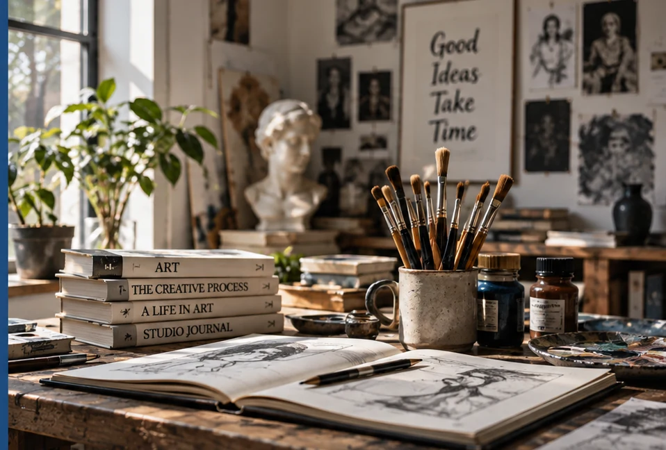
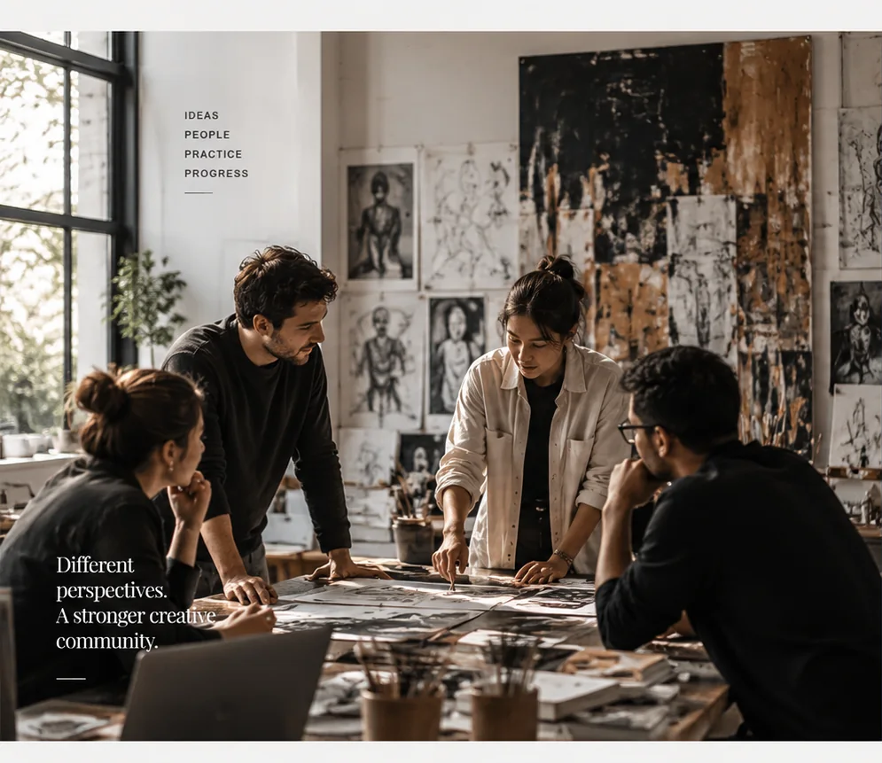
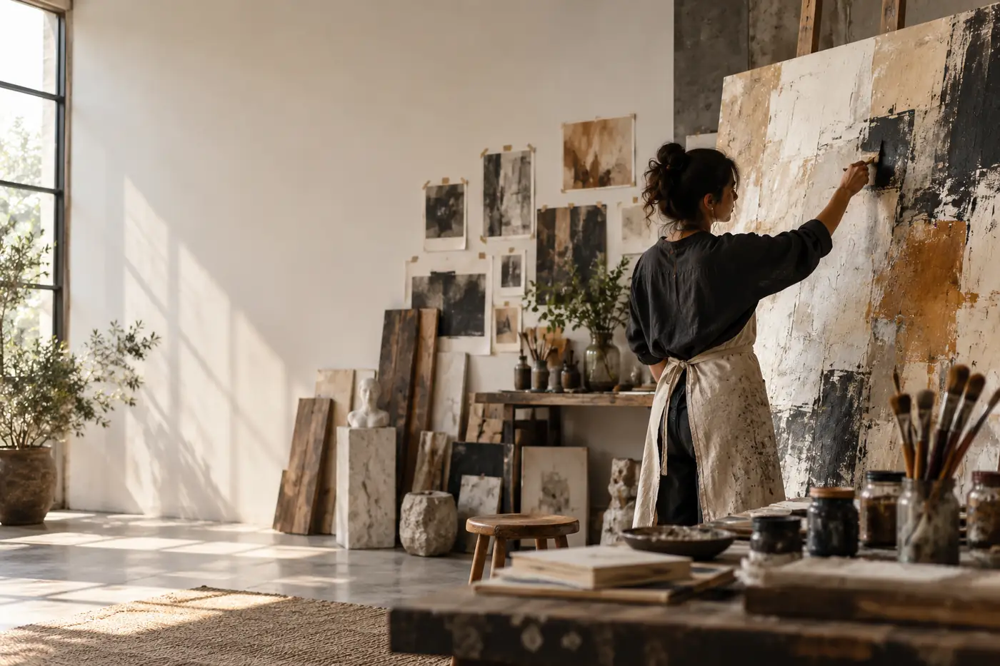

01
01
The evidence of making.
Tools, surfaces and traces that reveal how an idea changes while it is being made.
01 / EDITORIAL
Practice, culture, interviews and ideas in motion — stories from the studio, the people shaping it and the work moving beyond it.


02 STUDIO VISITA working studio is never still. Materials move, opinions change and unfinished ideas become the starting point for something unexpected.
Four practitioners compare references, challenge assumptions and make the next decision together.
Sketches, materials and imperfect trials stay visible — because the process is part of the work.
Better questions create stronger work, especially when different perspectives share the same table.
The most useful conversations happen before the work is finished. Artists, tutors and visiting practitioners test assumptions, challenge decisions and leave with new ways to see.
Questions that make a piece stronger without taking its voice away.
Different practices meeting around the same problem, material or idea.
The references, places and people that change how we read the work.

04 MATERIAL / OBSERVATIONExhibitions, people and places that expand the studio conversation.

Artists, designers, researchers and educators bring different methods into the studio. Their experiences become part of the culture students learn within.
Meet the practitionersFollow new stories, studio visits, conversations and observations from the Stackly community.
Continue through the journal